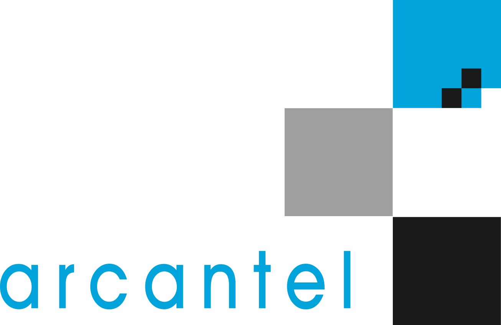
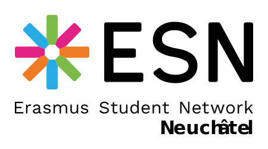
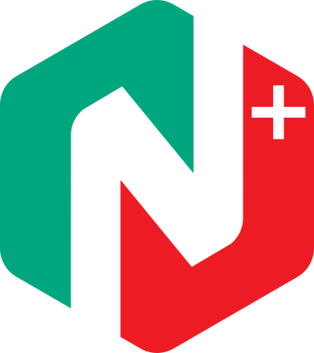
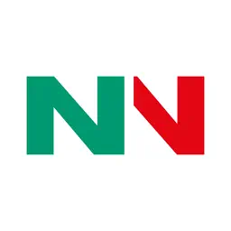
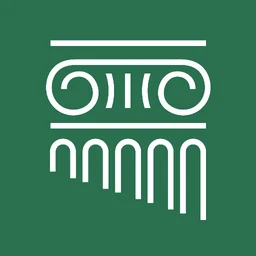

About
I build web and mobile applications for Swiss public institutions. Since March 2024 I have been a developer at Arcantel in Neuchâtel, working for the Neuchâtel public IT service, the public transport operator TransN, and the Court of Arbitration for Sport. My day-to-day is C# — Blazor on the web, .NET MAUI on mobile — with Angular and PHP where the existing systems call for it.
Public-sector software carries a constraint that shapes everything else: it has to work for everyone, and it has to hold up to outside scrutiny. I built the citizen registration services for the canton of Neuchâtel's e-voting platform, in a context where federal law permits only fully verifiable systems and national interoperability standards dictate how data is exchanged. More than 7,100 people have registered through them since registration opened in June 2026. Careful testing, documentation and traceability count for more there than clever code.
The rest of the work is more ordinary and no less useful: mobile apps published on the App Store and Google Play, a jurisprudence platform for sports arbitration, an authentication system for the canton's public WiFi spread across roughly 300 access points.
Outside work I am an active member of ESN Neuchâtel, the local Erasmus Student Network section, where I help international students settle in and find their way around Switzerland.
What I Work On
- Line-of-business web applications in .NET and Blazor, from database schema to interface
- Cross-platform mobile apps with .NET MAUI, through to the release pipeline for the App Store and Google Play
- Integration with national digital identities — SwissID, AGOV — and other standards-based authentication
- Systems that must follow an external specification: eCH standards, regulated data exchange, audit trails
- Front-end work in Angular and Vue.js, including redesigns of existing sites
- Taking over and modernising existing PHP and .NET applications
My Approach
I default to boring, verifiable choices. Standard patterns rather than clever ones, tests around the parts where being wrong is expensive, and documentation someone else can pick up without me in the room. Most of what I build keeps running long after I have moved off the project.
I am not a designer and do not claim to be. What I do reliably is take a specification, a mockup or a regulation and turn it into something that works and keeps working. When a requirement is ambiguous I would rather ask than guess.
I am open to new projects, particularly where the domain has real constraints: public services, regulated environments, or existing systems that need modernising without breaking what already runs.
Experience

Software Developer
Arcantel SA · Full-time
Neuchâtel, Switzerland
I develop web and mobile applications for SIEN (Service informatique de l'entité neuchâteloise), the public transport operator TransN and the Court of Arbitration for Sport. Three deliverables stand out: the citizen registration services for the canton's e-voting platform, the platform for reporting street harassment, and SwissID and AGOV sign-in in the Guichet Unique mobile app. Alongside those, .NET and Angular work on the TAS/CAS jurisprudence platform and blockchain governance experiments with NEDAO.

Active Member
ESN Neuchâtel · Erasmus Student Network
Neuchâtel, Switzerland
I help international students find their feet in Switzerland: organising events, and lending a hand with the practical side of moving to a new country.

Back End Developer
ESPRI Digital · Internship
Argentan, France
I built a database backup service for containerised workloads running on Kubernetes.

Full Stack Developer
Axeo System · Two internships
Lyon, France
July–December 2020: Vue.js components and a full-text search over Elasticsearch. September 2021 – March 2022: redesign of the Mutuelle Générale de Prévoyance site in Vue.js, and rework of parts of its PHP API.
View website →Projects
Guichet Unique
The online services platform of the Neuchâtel public administration, opened in May 2005 — Neuchâtel was a pioneer canton in going this way. It carried 224 services in December 2022, for 67,728 private accounts and 5,009 businesses, with transactions rising from 133,000 in 2012 to 1.24 million in 2021.
I work on the chancellery side. I built the citizen registration services for electronic voting, which more than 7,100 people used in the weeks after they opened, and the platform for reporting street harassment, delivered with the Neuchâtel Police.
GuMobile
The mobile app for the Guichet Unique platform, on iOS and Android — a .NET MAUI shell hosting the platform's web services, with authentication handled natively. It was launched by SIEN and its partners in December 2022, under the slogan « Votre administration dans la poche ».
It brings the canton's services to a phone — tax, vehicle registration, school records, fishing and hunting permits, the official gazette — though a few of the more complex ones still go through the desktop site. Around 35,000 downloads to date, two thirds of them on iOS.

NEDAO
A Neuchâtel association giving citizens, SMEs and institutions somewhere to experiment with smart contracts, DAOs and new models of governance.
It runs a DID portal for decentralised identity and uses Snapshot for governance votes. The project brings together universities, public bodies and local firms — among them HE-ARC, the University of Neuchâtel, SECO, Platinn and Arcantel.

Nemo News
Official mobile information system developed by the State and City of Neuchâtel in partnership with Arcantel, delivering news and announcements from public institutions directly to citizens' smartphones.
The app features customizable news filtering by theme and publisher, push notifications for important updates, emergency alerts, geolocation services, and an emergency phone directory for the Neuchâtel region.
Nemo Wifi
Free public WiFi network initiative launched by the Canton of Neuchâtel, providing secure internet access across approximately 300 access points throughout the region.
The service features a unified authentication system allowing users to connect at multiple locations with a single credential, SMS-based registration, and supports international phone numbers without collecting personal data.

TAS/CAS - Court of Arbitration for Sport
Participated in the redesign of the TAS/CAS main website and developed the new jurisprudence platform.
The jurisprudence site provides comprehensive access to sports arbitration decisions and legal precedents.
Education
EPITECH - European Institute of Technology
September 2019 - August 2024Expert in Information Technology, Software Development
The Grande Ecole Program is Epitech Technology's flagship curriculum. A 5-year program to become an IT expert with dense and progressive technical content, including a variety of programming projects covering numerous languages.
Dublin City University
September 2022 - May 2023Faculty of Engineering and Computing
Dublin, Ireland
Fourth year of studies at Dublin City University in Ireland. This international experience allowed me to expand my knowledge by exploring another culture.
Skills
.NET Ecosystem
Frontend Technologies
Databases
DevOps & Tools
Other Technologies
Languages
Contact
I am always looking for new collaborations to bring my expertise to your projects.
Feel free to contact me to discuss your needs.